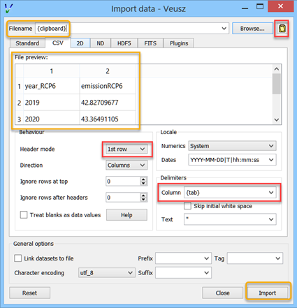

Reading data¶
Veusz can read data from files or the clipboard. Currently supported formats are text, CSV, HDF5, FITS, 2D text or CSV, QDP, binary and NPY/NPZ. Use the dialog to read data, or the importing commands in the API can be used. In addition, the user can load or write import plugins in Python which load data into Veusz in an arbitrary format. At the moment QDP, binary and NPY/NPZ files are supported with this method. The HDF5 file format is the most sophisticated, and is recommended for complex datasets.
By default, data are “linked” to the file imported from. This means that the data are not stored in the Veusz saved file and are reloaded from the original data file when opening. In addition, the user can use the menu option to reload data from linked files. Unselect the linked option when importing to remove the association with the data file and to store the data in the Veusz saved document.
Note that a prefix and suffix can be given when importing. These are added to the front or back of each dataset name imported. They are convenient for grouping data together.

We list the various types of import below.
Standard text import¶
The default text import operates on simple text files. The data are assumed to be in columns separated by whitespace. Each column corresponds to dataset (or its error bars). Each row is an entry in the dataset.
The way the data are read is goverened by a simple “descriptor”. This can simply be a list of dataset names separated by spaces. If no descriptor is given, the columns are treated as separate datasets and are given names col1, col2, etc. Veusz attempts to automatically determine the type of the data.
When reading in data, Veusz treats any whitespace as separating columns. The columns do not actually need to be aligned. Furthermore a \ symbol can be placed at the end of a line to mark a continuation. Veusz will read the next line as if it were placed at the end of the current line. In addition comments and blank lines are ignored (unless in block mode). Comments start with a #, ;, ! or %, and continue until the end of the line. The special value nan can be used to specify a break in a dataset.
If the option to read data in blocks is enabled, Veusz treats blank lines (or lines starting with the word no) as block separators. For each dataset in the descriptor, separate datasets are created for each block, using a numeric suffix giving the block number, e.g. _1, _2.
Data types in text import¶
Veusz supports reading in several types of data. The type of data can be added in round brackets after the name in the descriptor. Veusz will try to guess the type of data based on the first value, so you should specify it if there is any form of ambiguity (e.g. is 3 text or a number). Supported types are numbers (use numeric in brackets) and text (use text in brackets). An example descriptor would be x(numeric) +- y(numeric) + - label(text) for an x dataset followed by its symmetric errors, a y dataset followed by two columns of asymmetric errors, and a final column of text for the label dataset.
A text column does not need quotation unless it contains space characters or escape characters. However make sure you deselect the “ignore text” option in the import dialog. This ignores lines of text to ease the import of data from other applications. Quotation marks are recommended around text if you wish to avoid ambiguity. Text is quoted according to the Python rules for text. Double or single quotation marks can be used, e.g. “A ‘test’”, ‘A second “test”’. Quotes can be escaped by prefixing them with a backslash, e.g. “A new \”test\””. If the data are generated from a Python script, the repr function provides the text in a suitable form.
Dates and times are also supported with the syntax dataset(date). Dates must be in ISO format YYYY-MM-DD. Times are in 24 hour format hh:mm:ss.ss. Dates with times are written YYYY-MM-DDThh:mm:ss.ss (this is a standard ISO format, see http://www.w3.org/TR/NOTE-datetime). Dates are stored within Veusz as a number which is the number of seconds since the start of January 1st 2009. Veusz also supports dates and times in the local format, though take note that the same file and data may not work on a system in a different location.
Descriptors¶
A list of datasets, or a “Descriptor”, is given in the Import dialog to describe how the data are formatted in the import file. The descriptor at its simplest is a space or comma-separated list of the names of the datasets to import. These are columns in the file.
Following a dataset name the text +, -, or +- can be given to say that the following column is a positive error bar, negative error bar or symmetric error bar for the previous (non error bar) dataset. These symbols should be separated from the dataset name or previous symbol with a space or a comma symbol.
In addition, if multiple numbered columns should be imported, the dataset name can be followed by square brackets containing a range in the form [a:b] to number columns a to b, or [:] to number remaining columns. See below for examples of this use.
Dataset names can contain virtually any character, even unicode characters. If the name contains non alpha-numeric characters (characters outside of A-Z, a-z and 0-9), then the dataset name should be contained within back-tick characters. An example descriptor is `length data (m)`,+- `speed (mps)`,+,-, for two datasets with spaces and brackets in their names.
Instead of specifying the descriptor in the Import dialog, the descriptor can be placed in the data file using a descriptor statement on a separate line, consisting of “descriptor” followed by the descriptor. Multiple descriptors can be placed in a single file, for example:
# here is one section
descriptor x,+- y,+,-
1 0.5 2 0.1 -0.1
2 0.3 4 0.2 -0.1
# my next block
descriptor alpha beta gamma
1 2 3
4 5 6
7 8 9
# etc...
Descriptor examples¶
x y two columns are present in the file, they will be read in as datasets x and y.
x,+- y,+,- or x +- y + - two datasets are in the file. Dataset “x” consists of the first two columns. The first column are the values and the second are the symmetric errors. “y” consists of three columns (note the comma between + and -). The first column are the values, the second positive asymmetric errors, and the third negative asymmetric errors. Suppose the input file contains:
1.0 0.3 2 0.1 -0.2 1.5 0.2 2.3 2e-2 -0.3E0 2.19 0.02 5 0.1 -0.1
Then x will contain 1+-0.3, 1.5+-0.2, 2.19+-0.02. y will contain 2 +0.1 -0.2, 2.3 +0.02 -0.3, 5 +0.1 -0.1.
x[1:2] y[:] the first column is the data x_1, the second x_2. Subsequent columns are read as y[1] to y[n].
y[:]+- read each pair of columns as a dataset and its symmetric error, calling them y[1] to y[n].
foo,,+- read the first column as the foo dataset, skip a column, and read the third column as its symmetric error.
CSV files¶
CSV (comma separated variable) files are often written from other programs, such as spreadsheets, including Excel and Gnumeric. Veusz supports reading from these files.
In the import dialog choose “CSV”, then choose a filename to import from. In the CSV file the user should place the data in either rows or columns. Veusz will use a name above a column or to the left of a row to specify what the dataset name should be. The user can use new names further down in columns or right in rows to specify a different dataset name. Names do not have to be used, and Veusz will assign default col and row names if not given. You can also specify a prefix which is prepended to each dataset name read from the file.
To specify symmetric errors for a column, put +- as the dataset name in the next column or row. Asymmetric errors can be stated with + and - in the columns.
The data type in CSV files are automatically detected unless specified. The data type can be given in brackets after the column name, e.g. name (text), where the data type is date, numeric or text. Explicit data types are needed if the data look like a different data type (e.g. a text item of 1.23). The date format in CSV files can be specified in the import dialog box - see the examples given. In addition CSV files support numbers in European format (e.g. 2,34 rather than 2.34), depending on the setting in the dialog box.
HDF5 files¶
HDF5 is a flexible data format. Datasets and tables can be stored in a hierarchical arrangements of groups within a file. Veusz supports reading 1D numeric, text, date-time, 2D numeric or n-dimensional numeric data from HDF files. The h5py Python module must be installed to use HDF5 files (included in binary releases).
In the import dialog box, choose which individual datasets to import, or selecting a group to import all the datasets within the group. If selecting a group, datasets in the group incompatible with Veusz are ignored.
A name can be provided for each dataset imported by entering one under
“Import as”. If one is not given, the dataset or column name is
used. The name can also be specified by setting the HDF5 dataset
attribute vsz_name to the name. Note that for compound datasets
(tables), vsz_ attributes for columns are given by appending the
suffix _columnname to the attribute.
Error bars¶
Error bars are supported in two ways. The first way is to combine 1D
datasets. For the datasets which are error bars, use a name which is
the same as the main dataset but with the suffix (+-), (+) or
(-), for symmetric, postive or negative error bars,
respectively. The second method is to use a 2D dataset with two or
three columns, for symmetric or asymmetric error bars,
respectively. Click on the dataset in the dialog and choose the option
to import as a 1D dataset. This second method can also be enabled by
adding an HDF5 attribute vsz_twod_as_oned set to a non-zero value
for the dataset.
Slices¶
You may wish to reduce the dimensions of a dataset before importing by
slicing. You can also give a slice to import a subset of a
dataset. When importing, in the slice column you can give a slice
expression. This should have the same number of entries as the dataset
has dimensions, separated by commas. An entry can be a single number,
to select a particular row or column. Alternatively it could be an
expression like a:b:c or a:b, where a is the starting
index, b is one beyond the stopping index and optionally c is
the step size. A slice can also be specified by providing an HDF5
attribute vsz_slice for the dataset.
2D data ranges¶
2D data have an associated X and Y range. By default the number of
pixels of the image are used to give this range. A range can be
specified by clicking on the dataset and entering a minimum and
maximum X and Y coordinates. Alternatively, provide the HDF5 attribute
for the dataset vsz_range, which should be set to an array of four
values (minimum x, minimum y, maximum x, maximum y).
Dates¶
Date/time datasets can be made from a 1D numeric dataset or from a
text dataset. For the 1D dataset, use the number of seconds relative
to the start of the year 2009 (this is Veusz format) or the year 1970
(this is Unix format). In the import dialog, click on the name of the
dataset and choose the date option. To specify a date format in the
HDF5 file, set the attribute vsz_convert_datetime to either
veusz or unix.
For text datasets, dates must be given in the right format, selected
in the import dialog after clicking on the dataset name. As in other
file formats, by default Veusz uses ISO 8601 format, which looks like
2013-12-22T21:08:07, where the date and time parts are optional. The
T is also optional. You can also provide your own format when
importing by giving a date expression using YYYY, MM, DD, hh, mm and
ss (e.g. YYYY-MM-DD|T|hh:mm:ss), where vertical bars mark optional
parts of the expression. To automate this, set the attribute
vsz_convert_datetime to the format expression or iso to
specify ISO format.
2D text or CSV format¶
Veusz can import 2D data from standard text or CSV files. In this case the data should consist of a matrix of data values, with the columns separated by one or more spaces or tabs and the rows on different lines.
In addition to the data the file can contain lines at the top which affect the import. Such specifiers are used, for example, to change the coordinates of the pixels in the file. By default the first pixels coordinates is between 0 and 1, with the centre at 0.5. Subsequent pixels are 1 greater. Note that the lowest coordinate pixel is the bottom-left value in the table of imported values. When using specifiers in CSV files, put the different parts (separated by spaces) in separate columns. Below are listed the specifiers:
xrange A B - make the 2D dataset span the coordinate range A to B in the x-axis (where A and B are numbers). Note that the range is inclusive, so a 1 pixel wide image with A=0 and B=1 would have the pixel centre at 0.5. The pixels are assumed to have the same spacing. Do not use this as the same time as the xedge or xcent options.
yrange A B - make the 2D dataset span the coordinate range A to B in the y-axis (where A and B are numbers).
xedge A B C... - rather than assume the pixels have the same spacing, give the coordinates of the edges of the pixels in the x-axis. The numbers should be space-separated and there should be one more number than pixels. Do not give xrange or xcent if this is given. If the values are increasing, the lowest coordinate value is at the left of the dataset, otherwise if they are decreasing, it is on the right (unless the rows/columns are inverted or transposed).
yedge A B C... - rather than assume the pixels have the same spacing, give the coordinates of the edges of the pixels in the y-axis. If the values are increasing, the lowest coordinate value is at the bottom row. If they instead decrease, it is at the top.
xcent A B C... - rather than give a total range or pixel edges, give the centres of the pixels. There should be the same number of values as pixels in the image. Do not give xrange or xedge if this is given. The order of the values specify whether the pixels are left to right or right to left.
ycent A B C... - rather than give a total range or pixel edges, give the centres of the pixels. The value order specifies whether the pixels are bottom to top, or top to bottom.
invertrows - invert the rows after reading the data.
invertcols - invert the columns after reading the data.
transpose - swap rows and columns after importing data.
gridatedge - the first row and leftmost column give the positions of the centres of the pixels. This is also an option in the import dialog. The values should be increasing or decreasing.
FITS files¶
1D, 2D or n-dimensional data can be read from FITS files. 1D or 2D data can be read from image, primary or table HDUs. nD data can be read from from image or primary extensions. Note that pyfits or astropy must be installed to get FITS support.
The import dialog box uses a tree to show the structure of the FITS file. The user can choose to import the whole file, by clicking the check box at the top. They can import data from a particular HDU by selecting that, or individual table columns can be selected.
In the dialog box, a dataset can be given a name for the dataset. Otherwise the HDU or table column name is used. Note that a prefix and/or suffix can be specified to be added to all dataset names.
If dataset y should have an error bar specified by column yerr, then in the name for yerr, enter ‘y (+-)’. Asymmetric error bars can be specified using (+) and (-) on inidividual columns.
The slice column can be used to only import a subset of the dataset imported. This uses Python slicing syntax, which is comma-separated list of ranges and steps. A range is specified like 10:20, which selects the 11th to 20th items (the indices are numbered from 0, and the final index is one past the index you actually want). A stepped range can look like 10:20:2, which selects every other item in that range. Each of these numbers are optional, so : selects all items on that dimension. For example the slice :,10:14:2 selects all values on the first dimension, but only the 11th and 13th items on the next axis.
When importing 2D data the user can specify whether to treat this as 1D plus error bars (dimensions should have 2 or 3 columns), or specify a range in 2D space the data covers. Veusz will also attempt to use WCS information in the file for the 2D range if not specified. The standard mode is to use the CDELT, CRVAL and CRPIX keywords to specify a linear range for the data. Alternatively the user can specify pixel numbering (numbering from 0 to N-1). There is a fraction option for using a range of 0 to 1. Finally there is a pixel numbering scheme which numbers in pixels from the CRPIX keyword items.
Some of these options can be specified in the FITS file using the ‘VEUSZ’ header keyword. This header keyword can be added with the value ‘KEY=VALUE’ (applying to the whole HDU) or ‘COLUMN: KEY=VALUE’ (applying to a particular column in a table). Supported options for KEY are:
- name
provide name for dataset in VALUE
- slice
VALUE is slice to apply when importing dataset
- range
range of data for 2D dataset in form [minx, miny, maxx, maxy]
- xrange/yrange
range of dataset individually in x or y
- xcent/ycent
set to list of values giving centers of pixels
- xedge/yedge
set to list of values giving edges of pixels
- twod_as_oned
treat as 1D data with error bars if VALUE=1
- wcsmode
use specific WCS mode for 2D dataset (should be pixel/pixel_wcs/linear_wcs/fraction)
Reading other data formats¶
As mentioned above, a user may write some Python code to read a data file or set of data files. To write a plugin which is incorportated into Veusz, see https://github.com/veusz/veusz/wiki/ImportPlugins
You can also include Python code in an input file to read data, which we describe here. Suppose an input file “in.dat” contains the following data:
1 2
2 4
3 9
4 16
Of course this data could be read using the ImportFile command. However, you could also read it with the following Veusz script (which could be saved to a file and loaded with execfile or Load. The script also places symmetric errors of 0.1 on the x dataset.
x = []
y = []
for line in open("in.dat"):
parts = [float(i) for i in line.split()]
x.append(parts[0])
y.append(parts[1])
SetData('x', x, symerr=0.1)
SetData('y', y)
Reading data from the clipboard¶
Data can be imported into Veusz from the clipboard via (or pressing the corresponding button) and then pressing the button at the top right corner (or by entering {clipboard} in the field for the Filename). The data in the clipboard appears below in the chosen tab (Standard, CSV, 2D, etc.). The CSV tab gives you various options about how the clipboard is interpreted. Finally, you press the import button so the data appears in the Data panel. There remains no link to the file.
There is a convenient and quick way of importing data via the clipboard from spreadsheets like MS Excel, where you can choose a number of columns at once. Highlight the data in multiple columns you like to import. If the columns have different number of rows of data, just highlight so many rows that all the data is contained in the highlighted area. You may include the first row containing the names. Then copy. Switch to Veusz, (if it is the first time you need to press the button at the top right corner) and use the CSV tab, because there you have the option to choose the Column Delimiter {tab}, so all data columns appear (if you only import a single column, the delimiter does not matter). You also have the option to define the first row as Header mode. Then press import. Each column of data will appear as separate entity in the data panel. Next time you copy data from a spread sheet, you need only press the Import button in Veusz because the importing settings stay alive.
Manipulating datasets¶
Imported datasets can easily be modified in the Data Editor dialog box. This dialog box can also be used to create new datasets from scratch by typing them in. The Data Create dialog box is used to new datasets as a numerical sequence, parametrically or based on other datasets given expressions. If you want to plot a function of a dataset, you often do not have to create a new dataset. Veusz allows to enter expressions directly in many places.
Using dataset plugins¶
Dataset plugins can be used to perform arbitrary manipulation of datasets. Veusz includes several plugins for mathematical operation of data and other dataset manipulations, such as concatenation or splitting. If you wish to write your own plugins look at https://github.com/veusz/veusz/wiki/DatasetPlugins.
Using expressions to create new datasets¶
For instance, if the user has already imported dataset d, then they can create d2 which consists of d**2. Expressions are in Python numpy syntax and can include the usual mathematical functions.

Expressions for error bars can also be given. By appending _data, _serr, _perr or _nerr to the name of the dataset in the expression, the user can base their expression on particular parts of the given dataset (the main data, symmetric errors, positive errors or negative errors). Otherwise the program uses the same parts as is currently being specified.
If a dataset name contains non alphanumeric characters, its name should be quoted in the expression in back-tick characters, e.g. `length (cm)`*2.
The numpy functionality is particularly useful for doing more complicated expressions. For instance, a conditional expression can be written as where(x<y,x,y) or where(isfinite(x),a,b)).
You often do not need to create a new dataset when. For example, with the xy point plotter widget, you can directly enter an expression as the X and Y dataset settings. When you give a direct dataset expression, you can define error bar expressions by separating them by commas, and optionally surrounding them by brackets. For example (a,0.1) plots dataset a as the data, with symmetric errors bars of 0.1. Asymmetric bars are given as (a,a*0.1,-a*0.1).
Other useful functions in evaluation include those already mentioned in the LaTeX expansion description. DATA(name, [part]) returns the dataset with name given. The optional part, which can be ‘data’, ‘serr’, ‘perr’ or ‘nerr’, allows error bars to be returned for numerical data. SETTING(path) returns the value of the Veusz setting, which can include, for example, the best fitting parameters of a fit. ENVIRON is the Python environment variable dictionary, allowing values to be passed from the environment, e.g. float(ENVIRON['myvar']).
Linking datasets to expressions¶
A particularly useful feature is to be able to link a dataset to an expression, so if the expression changes the dataset changes with it, like in a spreadsheet.
Splitting data¶
Data can also be chopped in this method, for example using the expression x[10:20], which makes a dataset based on the 11th to 20th item in the x dataset (the ranges are Python syntax, and are zero-based). Negative indices count backwards from the end of the dataset. Data can be skipped using expressions such as data[::2], which skips every other element
Defining new constants or functions¶
User defined constants or functions can be defined in the “Custom definitions” dialog box under the edit menu. Functions can also be imported from external python modules.

Custom definitions are defined on a per-document basis, but can be saved or loaded into a file. A default custom definitions file can be set in the preferences dialog box.
Dataset plugins¶
In addition to creating datasets based on expressions, a variety of dataset plugins exist, which make certain operations on datasets much more convenient. See the Data, Operations menu for a list of the default plugins. The user can easily create new plugins. See https://github.com/veusz/veusz/wiki/DatasetPlugins for details.
Capturing data¶
In addition to the standard data import, data can be captured as it is created from an external program, a network socket or a file or named pipe. When capturing from a file, the behaviour is like the Unix tail -f command, where new lines written to the file are captured. To use the capturing facility, the data must be written in the simple line based standard Veusz text format. Data are whitespace separated, with one value per dataset given on a single line.
To capture data, use the dialog box . A list of datasets should be given. This is the standard descriptor format. Choose the source of the data, which is either a a filename or named pipe, a network socket to connect to, or a command line for an external program. Capturing ends if the source of the data runs out (for external programs or network sockets) or the finish button is clicked. It can optionally end after a certain number of data lines or when a time period has expired. Normally the data are updated in Veusz when the capturing is finished. There is an option to update the document at intervals, which is useful for monitoring. A plot using the variables will update when the data are updated.
Click the Capture button to start the capture. Click Finish or
Cancel to stop. Cancelling destroys captured data.